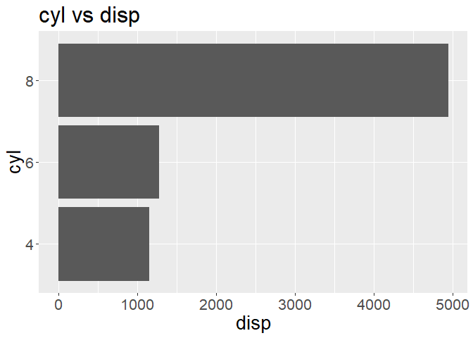
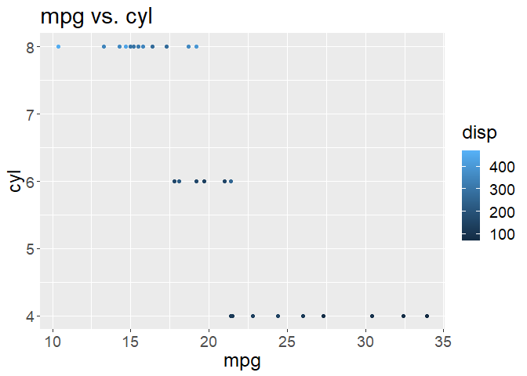

The goal of group05pkg is to aid in creating a classification analysis project end to end. It includes functions that create training and test sets, clean the data, plot the data, create specification, recipe and v-fold cross-validation objects to use in a classification model.
Package Website
You can visit the package website here.
Installation
You can install the development version of group05pkg from GitHub with:
# install.packages("devtools")
devtools::install_github("DaliaAh/dsci-310-group-05-pkg")Examples
Here are some basic examples that show how to use the functions in this package:
library(group05pkg)- Using
split_datasetyou can split a dataset into training and testing sets based on a strata variable. Here we useirisdataset.
result<-split_dataset(iris, "Species", "Sepal.Length")
training_set <- result[[1]]
test_set <- result[[2]]
head(training_set)
#> Sepal.Length Sepal.Width Petal.Length Petal.Width Species
#> 1 5.1 3.5 1.4 0.2 setosa
#> 2 4.9 3.0 1.4 0.2 setosa
#> 3 4.7 3.2 1.3 0.2 setosa
#> 5 5.0 3.6 1.4 0.2 setosa
#> 6 5.4 3.9 1.7 0.4 setosa
#> 7 4.6 3.4 1.4 0.3 setosa
dim(training_set)
#> [1] 111 5
head(test_set)
#> Sepal.Length Sepal.Width Petal.Length Petal.Width Species
#> 4 4.6 3.1 1.5 0.2 setosa
#> 10 4.9 3.1 1.5 0.1 setosa
#> 15 5.8 4.0 1.2 0.2 setosa
#> 20 5.1 3.8 1.5 0.3 setosa
#> 25 4.8 3.4 1.9 0.2 setosa
#> 27 5.0 3.4 1.6 0.4 setosa
dim(test_set)
#> [1] 39 5- Using
wrangle_training_data(), you can group training data by predictor and strata_variables and add a group_labels column. Here we are using a dummy training data to pass into our function.
# Given a dummy training data called training_data
training_data <- data.frame(
col1 = c("yes", "no", "yes", "no"),
col2 = c("yes", "yes", "no", "no"),
col3 = c(2,4, 6, 8)
)
label<- c("Label 1")
wrangled<- wrangle_training_data(training_data, col1, col2 , label)
wrangled
#> # A tibble: 4 × 4
#> # Groups: col1 [2]
#> col1 col2 n label
#> <chr> <chr> <int> <chr>
#> 1 no no 1 Label 1
#> 2 no yes 1 Label 1
#> 3 yes no 1 Label 1
#> 4 yes yes 1 Label 1- Using
horizontal_histfunction we can build a horizontal histogram that will help understand the pattern between two variables. Here we are usingmtcarsdataset again.
horizontal_hist(mtcars, cyl, disp, "cyl",
"disp", "cyl vs disp",
plot_width = 2, plot_height = 3
)
- Using
scatterplotfunction we can build a scatter plot to help understand the relationship between two variables. Here we are usingmtcarsdataset.
scatterplot(mtcars, mpg, cyl, disp, "mpg",
"cyl", "disp",
"mpg vs. cyl",
plot_width = 2, plot_height = 3)
- Using
create_knn_specwe can create a specification object where we can specify the weight function. We can use the specification object created in training k-nearest neighbor models.
create_knn_spec("rectangular")
#> K-Nearest Neighbor Model Specification (classification)
#>
#> Main Arguments:
#> neighbors = tune()
#> weight_func = weight_func
#>
#> Computational engine: kknn- Using
create_recipewe can create a recipe object by specifying the dataset and response variable. This object can be used in a modelling workflow. Here we useirisdataset.
create_recipe(iris, "Species")- Using
create_vfoldwe can create a v-fold cross-validation object by specifying the dataset, the number of folds, and a strata variable. This object then can to used in a modelling workflow. Here we useirisdataset.
create_vfold(iris, 5, "Species")
#> # 5-fold cross-validation using stratification
#> # A tibble: 5 × 2
#> splits id
#> <list> <chr>
#> 1 <split [120/30]> Fold1
#> 2 <split [120/30]> Fold2
#> 3 <split [120/30]> Fold3
#> 4 <split [120/30]> Fold4
#> 5 <split [120/30]> Fold5Contributing
Thank you for taking the time to contribute to the group05pkg! We welcome contributions from anyone who is interested in improving the project. Please use your best judgment, and feel free to propose any changes you deem appropriate in a pull request. Please refer to CONTRIBUTING and CODE_OF_CONDUCT for more information.
License
This project is offered under the Attribution 4.0 International (CC BY 4.0) License. The software provided in this project is offered under the MIT open source license . See the license file for more information.